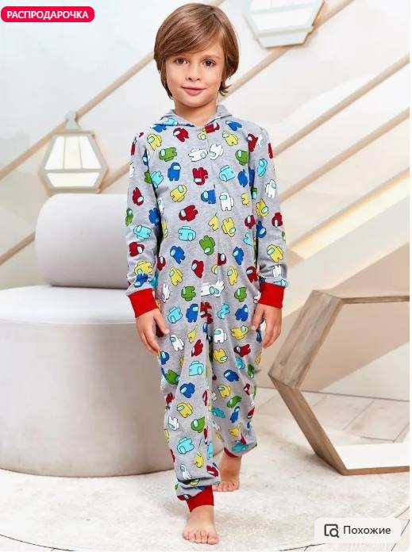
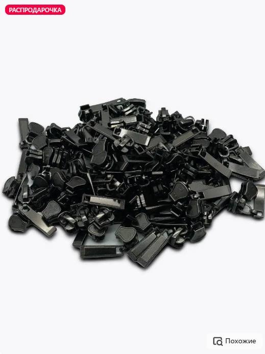
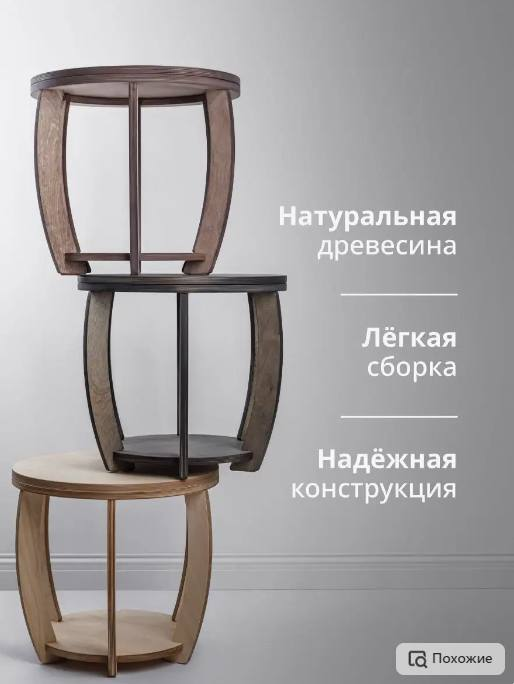
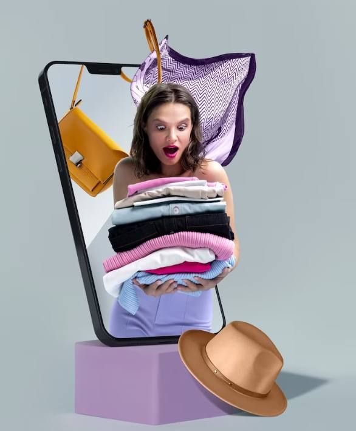
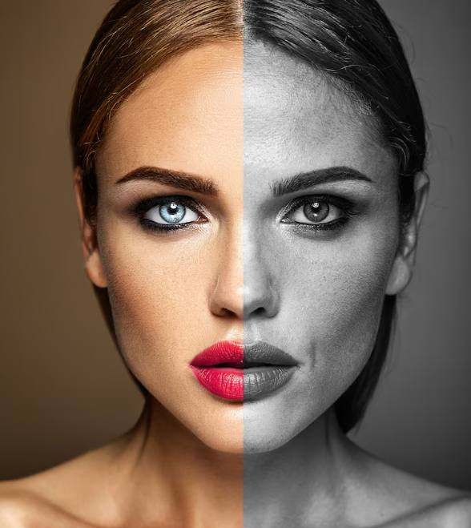

Виды фотографий для маркетплейсов
На площадках онлайн-торговли можно выделить три основных типа фото.
Товар и модель
Некоторые товары лучше всего представить на моделях. Например, сложно оценить фасон футболки, когда она просто лежит на плоской поверхности. Фотография с моделью помогает покупателям понять, как изделие выглядит на живом человеке, садится по фигуре и с чем его можно комбинировать.
Только товар
Для некоторых товарных категорий важно сфокусироваться исключительно на изделии без дополнительных элементов. Это особенно актуально для предметов интерьера, электроники, аксессуаров.
Товар с информацией - инфографика
Иногда полезно добавить дополнительные характеристики в виде пояснительного текста, графиков, таблиц или схем. Это подойдет для технических устройств, мебели или других товаров, где важны технические параметры.
Требования маркетплейсов к фотографиям
Одним из основных факторов, влияющих на решение потребителя о покупке, является невозможность самостоятельно "пощупать" и рассмотреть его перед покупкой. Эту проблему можно решить с помощью качественного визуального контента. У каждой торговой площадки есть свои требования к изображениям. Не соблюдая этих правил, вы рискуете не пройти модерацию или создать негативное впечатление у потенциальных покупателей. Условия действительны на февраль 2024 года, но рекомендуется проверять их актуальность, так как они могут меняться.
Требования Wildberries
-
Форматы картинок - JPG, PNG, WEBP.
-
Разрешение - не менее 700 × 900 пикселей.
-
Сжатие в части - не менее 65%.
-
Пропорции - 3:4.
-
Файлы - до 10 Мб.
-
Количество - до 30 фотов карточке.
Запрещено размещать логотипы, промокоды и акции на изображениях.
Требования к фотографиям на Ozon
-
В личном кабинете на сайте принимаются форматы JPEG, JPG, PNG, а в приложении Ozon Seller - JPEG, JPG, PNG, HEIC, WEBP.
-
Минимальное разрешение для категорий "Одежда", "Обувь" и "Аксессуары" должно быть не менее 900 × 1200 пикселей, для остальных - от 200 × 200 до 4320 × 7680 пикселей.
-
Соотношение сторон: для "Одежда", "Обувь" и "Аксессуары" - 3:4, для остальных - 1:1.
-
Максимальный вес файла - 10 МБ.
-
Количество фото - до 15.
-
Черно-белые изображения не допускаются.
Правила Яндекс.Маркет
-
Допустимые форматы: JPEG, JPG, PNG, WEBP.
-
Максимальный размер файла - до 10 МБ.
-
Разрешение от 300 × 300 пикселей.
-
До 20 фотографий в карточке.
-
Только четкие фотографии.
-
Запрещено размещение логотипов, водяных знаков и сообщений об акциях на фотографиях.
Требования KazanExpress
-
Главные фотографии должны соответствовать правилам площадки: белый фон, фокус на товаре, лишних деталей.
-
Формат 3:4, размер не больше 1080 x 1440, png или jpg.
-
Первое фото должно быть на однотонном белом фоне, анфас, с минимальным фокусным расстоянием 50 мм.
-
Используйте качественное освещение для мягких теней.
-
Товар должен располагаться по центру кадра, чтобы не обрезаться на превью.
Требования Сбермегамаркет
На площадке СберМегаМаркет можно разместить до 10 фотографий, соблюдая определенные требования.
-
Основное фото товара должно быть представлено на белом фоне без водяных знаков или логотипов.
-
На дополнительных фотографиях желательно показать товар с разных ракурсов и сосредоточиться на деталях. Здесь нужно использовать профессиональную интерьерную и предметную фотосъемку, а также информационные блоки, которые запрещены для основного изображения.
Есть исключения, когда нужно использовать интерьерные фотографии в качестве главного изображения, например, постельное белье лучше фотографировать на постели, чтобы покупатель смог оценить дизайн и комплектацию. В категории одежды - снимать модели на светлом сером фоне.
Система проверки пропустит изображения с разрешением 600x600 пикселей, однако правильнее загружать фотографии не менее 1500x1500 пикселей с минимальными отступами вокруг товара.
Требования к съемке товаров для AliExpress
На главном фото товар должен быть четким, в кадре без лишних предметов, графики или рендеров. Цвет фона белый или светлый. Максимальный размер для карточек с соотношением сторон 1:1 - 800 x 800 пикселей, а для фотографий с соотношением 3:4 - от 750 x 1000.
AliExpress запрещает фото с преувеличенной эффективностью, например, нельзя показывать сильное изменение кожи до и после использования крема. Также запрещены изображения, которые могут вызвать дискомфорт у потребителей.
На AliExpress разрешено размещать на фото купоны, промокоды, другую информацию.
Как сделать продающие фото
Секрет успеха продавцов на онлайн-площадках заключается в профессионально выполненных фотографиях. Высококачественные изображения играют ключевую роль в продажах, успешном продвижении бизнеса, отстранении от конкурентов в интернет-среде.
Реальные фото
Можно улучшить снимки, не стоит делать это чрезмерно. Рано или поздно покупатель увидит товар вживую, и если он значительно отличается от представленного, это может привести к возврату и негативному отзыву. Поэтому важно демонстрировать товар таким, какой он есть, при естественном освещении и без излишней обработки. Особое внимание следует уделить цветовое гамме - искажение часто приводит к возврату.
Разные ракурсы
Сделайте несколько снимков с разных ракурсов. Можно использовать объект с известными размерами, например, линейку или монету. Это поможет создать более полное впечатление о предмете и увеличит вероятность успешной покупки.
Сценарий
Люди часто не покупают товары, поскольку им сложно представить, как их использовать в повседневной жизни. Создавайте увлекательные фотосеты. Например, можно сделать серию фотографий с использованием товара в повседневных ситуациях: от сервировки стола до создания образа в модном стиле, если речь идет об одежде.
Эмоции
Покажите счастливые моменты с применением товаров. Например, семейный пикник в парке с вашей корзиной или веселые игры детей с игрушками из вашего ассортимента. Такие мини-истории помогают покупателям установить эмоциональную связь с вашим брендом и почувствовать, как товар может добавить яркие моменты в их жизнь.
Хорошая модель
Внешность модели оказывает влияние на наши решения. Исследования указывают на то, что именно красивому человеку чаще удается добиваться больших успехов.
-
Основное отличие заключается в критериях отбора:
-
вам нравится внешний вид модели;
-
она должна соответствовать вашему товару и бренду.
Мы не можем дать четкого ответа на вопрос, какая модель считается красивой, поскольку данная тема требует дополнительных исследований. Также влияние внешности на решение о покупке товара остается недостаточно изученным.
Ретушь
Часто фотографы с этим вопросом обращаются к ретушерам, чтобы довести снимки до совершенства. Он сможет исправить недочеты, такие как неправильный баланс белого или нежелательные тени на лице.
Товар хорошо виден
Необходимо передать, что именно на снимке является основным объектом, а что - второстепенным. Чтобы привлечь внимание клиента используют общие инструменты: композицию и цветовые, световые, фокусные контрасты.
Сначала главное фото
На первом фото покажите товар, а затем его детали. Например, если вы продаете обувь, на первой фотографии должна быть модель в обуви в полный рост, а на дополнительных - крупным планом фурнитура, материалы или подробнее другие детали.
Ошибкой будет сразу показывать детали на основной фотографии, например, высоту каблука. Если покупатель ищет обувь с низким каблуком, он может подумать, что вы специализируетесь только на высоких, что повлияет на его решение обратиться к другому продавцу.
"Зацепить" максимально
В первые секунды просмотра изображения покупатель уже делает выбор - остаться на вашем сайте или перейти на другой. Если ваш контент не зацепил и не заинтересовал сразу, то все вложенные средства в привлечение внимания покупателя будут напрасными.
.jpg)
Освещение
Важно, чтобы свет был неярким и равномерным. Делайте акцент на естественный свет и следите за тем, чтобы тени не портили снимок.
Выберите подходящий фон
В маркетплейсе могут отсутствовать строгие требования к фону, но лучше использовать нейтральный и однородный, чтобы не отвлекать внимание. Грамотно подбирайте цвет, чтобы товар не сливался с ним. Например, для белых предметов лучше использовать черный или насыщенный фон. Если нет такой возможности - можно размыть его с помощью фоторедакторов.
Не копируйте фотографии
Покупатели хотят видеть реальные снимки. Даже если вы перепродаете товары - сделайте уникальные фотографии, не копируйте материалы с сайтов производителей.
.jpg)
Оборудование для создания фото в домашних условиях
Выбор между использованием смартфона или фотоаппарата зависит от разрешения, которое позволяет ваше устройство. Большинство современных смартфонов имеют хорошие камеры, способные создавать качественные снимки бесплатно. Но если ваш смартфон не обладает достаточным разрешением, рассмотрите вариант приобретения фотоаппарата. Не обязательно сразу приобретать дорогую зеркальную камеру с высоким разрешением. Компактный вариант тоже может быть эффективным решением.
Используйте естественный источник света, но при его отсутствии найдите дополнительные источники. Для фотосъемки моделей наилучший результат дает профессиональное освещение. В случае съемки предметов достаточно использовать кольцевые лампы или вспышки накамерного света.
Использование треноги обеспечит стабильность при фотосъемке продуктов. Штатив фиксирует камеру в определенном положении, что способствует получению более четких снимков. Кроме того, с помощью треноги можно создать несколько изображений с одного и того же ракурса, что упростит последующую обработку и поможет выбрать лучший снимок для размещения на маркетплейсе.
После съемки важно иметь доступ к устройству для редактирования фотографий. Работать с изображениями на компьютере гораздо удобнее, чем на мобильном устройстве, благодаря большому экрану, на котором можно внимательно изучить каждую деталь. Главное, чтобы компьютер или ноутбук позволял без проблем запустить необходимое приложение.
Можно ли использовать чужие фотографии
Использование чужих фотографий без разрешения - серьезное нарушение закона. Если правообладатель обнаружит такие действия, он имеет полное право обратиться в суд и требовать компенсацию ущерба.